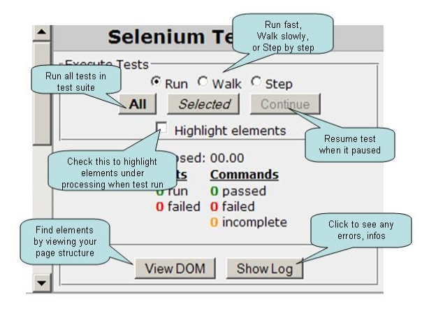

Overview
This document details how Selenium Core can be deployed to test or script web applications.Getting Started
If this is your first time using a Selenium tool, you may not want to just use Selenium Core directly; one good way to get introduced to Selenium's features is to use Selenium IDE, which embeds Selenium Core internally. Download Selenium IDE and you'll get Selenium Core along with it. Give it a spin!
When you're done, you may want to consider more carefully Which Selenium Tool Should I Use?
Installing Selenium Core
To use Selenium Core, you need to make it available from the same web server as the application you want to test. (This is a JavaScript security requirement. If you can't/won't modify the webserver you want to test, Selenium Core may not be the right tool for you; you may just want to use Selenium IDE or Selenium RC instead.)
Normally, this is as simple as extracting the Selenium Core zip file into the DocumentRoot, htdocs, or webroot of your webserver. Then, try to open the TestRunner.html page on your website, which should be in the core/ directory.
You'll be allowed to select a TestSuite; for now, just click "go" to open the default test suite. If you installed all of the tests along with core, you should now see a list of tests to run. Click on the "all" button to run them. Note that some tests may fail if your browser blocks pop-ups, manages passwords, or does other helpful things that interfere with automation. Be sure to turn these features off before running the tests!
Writing Your First Test Case
A test-case is represented by an HTML document written in "Selenese", containing a table with 3 columns, room enough for a command and two arguments. (See the Reference Guide for a complete list of commands.) Not all commands take two arguments; in this case either leave the column blank or use a to make the table look better.
The first row will be ignored by Selenium, so this can be used for a title or any other information.
Example:
Simple Test Table open /mypage type nameField John Smith click submitButton True verifyText name John Smith
Test cases should be inserted into certain test suite and can be run. For an instance of test suite, refer to ${SELENIUM_HOME}/tests/TestSuite.html . Basically it's just about link test case pages into a table like following:
<table id="suiteTable" cellpadding="1" cellspacing="1" border="1">
<tbody>
<tr><td><b>Test Suite </b> </td> </tr>
<tr><td><a href="./TestOpen.html">TestOpen </a></td></tr>
<tr><td><a href="./TestClick.html">TestClick </a></td></tr>
</tbody>
</table>
Run Your Testcase
Once your wrote a testcase, you can run it using "TestRunner.html". You can find it at ${SELENIUM_HOME}/core/TestRunner.html.
There is a simple way to run a testcase: put it to ${SELENIUM_HOME}/tests and add the test file link to ${SELENIUM_HOME}/tests/TestSuite.html.Then run it using the url file://${SELENIUM_HOME}/core/TestRunner.html?test=../tests/TestSuite.html. You should have this screen after it launched.

Now you can run all test cases by click the "All" button on the right side. Also you can click the title of test case to select and run them one by one.
Control your test running by the Test Runner Panel.

SetUp / TearDown
There are no setUp and tearDown commands in Selenese, but there is a way to handle these common testing operations. On the site being tested, create URLs for setUp and tearDown. Then, when the test runner opens these URLs, the server can do whatever setUp or tearDown is necessary.
Example:
For the T&E project, we wanted the functional tests to run as a dummy user. Therefore, we made a /setUpFT URL that would create a dummy user and write the userID to the page. Then, we can store this value (using the command storeValue) and use it in the script. Finally, we made a /tearDownFT URL which takes the dummy userID as a parameter and deletes the user. Therefore, our tests look like this:
Setup and Teardown open /setUpFT storeValue userid open /login type userID ${userid} click submit open /tearDownFT?userid=${userid}
Continuous Integration
Selenium Core can be integrated with an automated build. When the parameter "auto=true" is added to the URL, Selenium will run the entire suite of tests, and then POST the results to an URL of your choosing. The default URL is "/postResults", but an alternative handler location can be provided by specifying a "resultsUrl" parameter.
That means that you're going to need some kind of web application to handle the POSTed test results and save them to disk. You can write your own in a web-enabled language of your choosing (a simple servlet, ASP, JSP, Perl script, or whatever) or you can use the one that comes with Selenium Remote Control.
- If you do decide to write your own, the steps for Continuous Integration are:
Create a servlet-type application at the url /postResults which can read the parameters below and write them to a file.
- Create a script which can start up a brower and send to to the URL: selenium?auto=true
- Generally, this can be done by merely calling the browser with the URL as an argument:
firefox.exe http://localhost/selenium?auto=true
- Make your continuous build:
- Call the script from step 2, preferably using more than one browser
- Wait for it to finish, possibly by checking for the existence of the file(s) from step 1
- Parse these files to determine whether the build passed or failed
- Act accordingly (send emails, update a build web page, etc.)
The fields of the post are:
Parameter Description result the word "passed" or "failed" depending on whether the whole suite passed or at least one test failed. totalTime the time in seconds for the whole suite to run numTestPasses tht total number of tests which passed numTestFailures the total number of tests which failed. numCommandPasses the total number of commands which passed. numCommandFailures the total number of commands which failed. numCommandErrors the total number of commands which errored. suite the suite table, including the hidden column of test results testTable.1 the first test table testTable.2 the second test table ... ... testTable.N The Nth test table